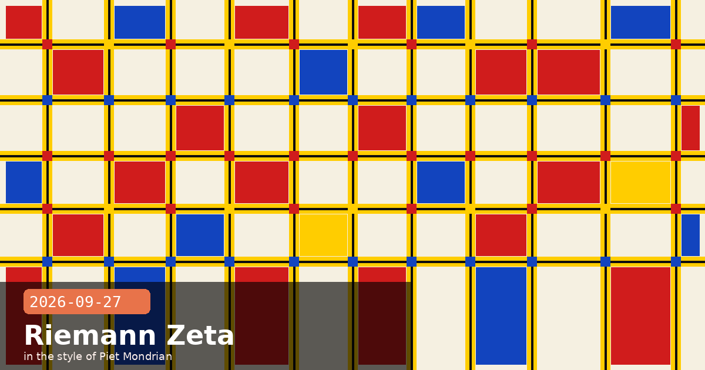

Claude Pushes Riemann Zeta Bound to 67.2%, Code v2.1.283 Locks Model Versions, API Gains thinking_mismatch_allowed

🧭 Claude Advances Riemann Zeta Zero Lower Bound from 41.6% to 67.2%
An unreleased research version of Claude has improved the lower bound for the proportion of Riemann zeta zeros lying on the critical line — the core assertion of the Riemann Hypothesis — from 41.6% to 67.2%. The result was validated by external mathematicians Brian Conrey and Dan Goldston and constitutes a formally verifiable proof. Claude deployed roughly 60 subagents issuing approximately 2,400 shell commands across a 1.5-day compute run. Anthropic is explicit that the result does not resolve the full Riemann Hypothesis, but it is a substantial improvement on a bound that has stood for decades and represents a meaningful advance for AI-assisted pure mathematics.
What the bound means
The Riemann Hypothesis (RH) states that every non-trivial zero of the zeta function ζ(s) has real part ½ — i.e., lies on the "critical line." Because proving this for all zeros remains out of reach, mathematicians track what fraction of zeros can be proven to lie on the line. Hardy and Littlewood showed in 1921 that infinitely many do; Conrey pushed the density lower bound to 41.6% in 1989. Claude's result extends that to 67.2%, meaning over two thirds of all zeros are now provably critical-line zeros — a number that had not moved in 37 years.
How Claude approached it
Multi-agent parallelism: ~60 subagents each held a distinct region of the symbolic manipulation space, passing intermediate results to a coordinating agent that checked consistency across branches before committing steps.
~2,400 shell commands: The agents invoked a computer algebra system (CAS) for explicit computations — prime-sum estimates, zero-density estimates, mollifier integrals — rather than attempting pure in-context reasoning at the scale of full CAS sessions.
Formal verifiability: The proof is structured so that each lemma is independently checkable by a human or mechanised prover, not a black-box statistical argument. Conrey and Goldston confirmed the key steps.
~1.5 days of compute: The research blog notes no specific cost figure, in contrast to the nine-loop amplitude ($1–2k/method). Mathematics at this level appears cheaper per result than large physics computations.
Three AI science results in one week
This is the third genuinely novel scientific result attributed to Claude within a single week: the ART enzyme discovery (September 24), the nine-loop N=4 SYM amplitude (September 26), and now an advance on the Riemann Hypothesis lower bound (September 27). All three share a structural feature: Claude was not given a step-by-step algorithm, only an objective and compute resources, and it independently chose its methods. For practitioners the actionable question remains the same — what computationally hard open problems in your field are stalled because execution cost or coordination complexity was prohibitive, not because the method is unknown?
🧭 Claude Code v2.1.283: Exact Model Version Locking and LLM Proxy Gateway Headers
Claude Code v2.1.283 (released September 25) introduces two significant enterprise controls. The first is availableModelsMatch='exact' — a new option in managed settings that locks an availableModels entry to a precise named model version, blocking automatic adoption of newly released models until an admin explicitly adds them. The second is an opt-in x-claude-code-prompt-id gateway hint header that lets LLM proxy operators group all API requests serving a single user prompt into a traceable unit, enabling per-prompt cost attribution and request-level debugging at the proxy layer.
exact model locking in practice
Previously, availableModels entries matched model families (e.g. all claude-opus-5-x releases). With exact, an org pinned to claude-opus-5-5-20260820 will not silently gain access to claude-opus-5-6-20261014 when it ships — they stay on the locked version until an admin updates the policy. This is particularly useful for teams with formal change-management requirements, where an unplanned model upgrade would require re-validation before production use.
When Claude Code sends a user-initiated prompt to the API, it now optionally emits an x-claude-code-prompt-id request header. Intermediate LLM proxies that see this header can correlate all API calls (including tool-use sub-calls, auto-compaction retries, and thinking-block round-trips) back to the originating prompt. The header is opt-in and not sent by default; it is enabled in settings.json under enableGatewayHintHeader: true.
Why this matters for self-hosted proxy deployments
Enterprises running an internal LLM gateway (LiteLLM, HelixML, a custom proxy) have historically struggled to attribute multi-call conversations to individual user prompts. With the hint header, the proxy can reconstruct the full prompt-level call tree without needing Claude Code to emit verbose tracing logs. Combine this with exact model pinning and the deniedModels blocklist to build a robust governance layer without touching the Claude Code binary.
Claude Codev2.1.283model version lockingavailableModelsMatchdeniedModelsLLM proxygateway headersenterprise controlschange management
🧭 Messages API Adds thinking_mismatch_allowed — Guard Agentic Pipelines That Cache and Replay Thinking Blocks
A late-September platform release adds thinking_mismatch_allowed to the preserved thinking controls in the Messages API. The parameter addresses a failure mode in agentic pipelines that cache intermediate thinking blocks and replay them in subsequent turns: if a cached thinking block has been altered — by summarisation, token trimming, or a routing layer that modifies context — the API can now detect the mismatch and either raise an error or silently continue, depending on how the developer configures the flag.
Background: preserved thinking and context caching
Extended thinking in Claude generates thinking content blocks that are marked as "preserved" — they should be passed back in conversation history verbatim. The model relies on these blocks during subsequent turns; if they are modified, reasoning quality can degrade silently. Before this release, the only safeguard was a client-side responsibility to pass thinking blocks through unchanged. There was no server-side signal if a proxy, summariser, or context-management library had altered them.
How thinking_mismatch_allowed works
thinking_mismatch_allowed: false (default): If a thinking block in the conversation history does not match the cryptographic signature embedded when it was first generated, the API returns a 400 thinking_block_mismatch error. Use this for maximum pipeline integrity.
thinking_mismatch_allowed: true: The API accepts the modified thinking block and proceeds, but sets a thinking_mismatch_detected: true field in the response metadata. Use this if you want detection without hard failures — e.g., to log and alert while keeping user-facing tasks uninterrupted.
// Messages API — enable detection without hard failure
{
"model": "claude-opus-5-5-20260820",
"thinking": { "type": "enabled", "budget_tokens": 8000 },
"thinking_mismatch_allowed": true,
"messages": [...]
}
Migration note for existing agentic pipelines
The default changed from silently accept to thinking_mismatch_allowed: false (hard error). If you have a pipeline that compacts, summarises, or otherwise modifies conversation history before replay, enable thinking_mismatch_allowed: true first, monitor for thinking_mismatch_detected in production, then fix the root cause. Jumping straight to the default-off behaviour may surface 400 errors in pipelines you did not know were touching thinking blocks.